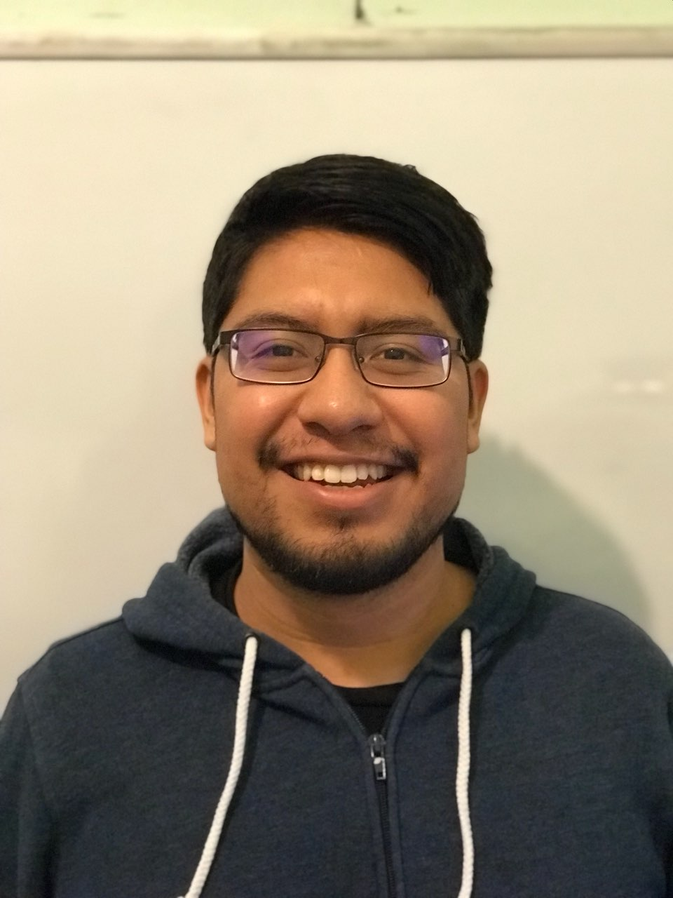

About Me
My name is Heriberto and it is my first semester taking classes at CCSF. I am taking CNIT 132, 133 and CS 150, 160. I want to learn enough to create a portfolio to make me more employable. I enjoy programming because to me working on a project is like doing a challenging puzzle. I want to become a full-stack web developer because there are a lot of jobs avaible for those that know Java, Javascript, HTML, CSS and backend technologies. It is my third week taking classes and so far I am having a blast. I am glad that CCSF is free because I would not be able to afford college otherwise.
In my free time, when I am not coding or tutoring I like to take long walks. I live by the second largest park in San Francisco and there are a lot of nice trails to walk through. I also like reading because it helps me reflect on my own experiences and about the society I live in. Currently, I am reading The Hate U Give by Angie Thomas.
These are my favorite things to do in no particular order.
- Watch soccer
- Read
- Take long walks
- Code